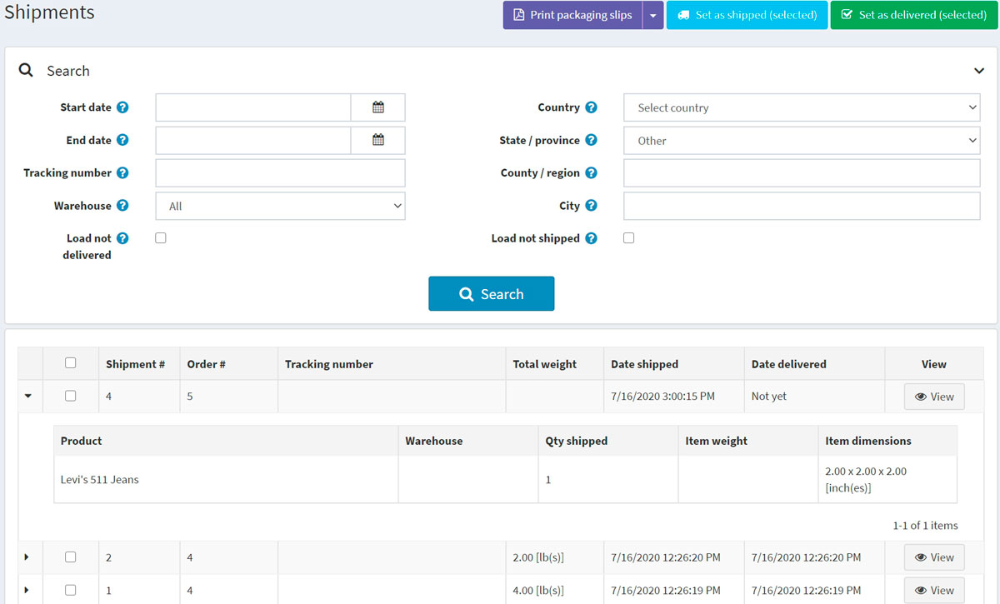
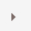
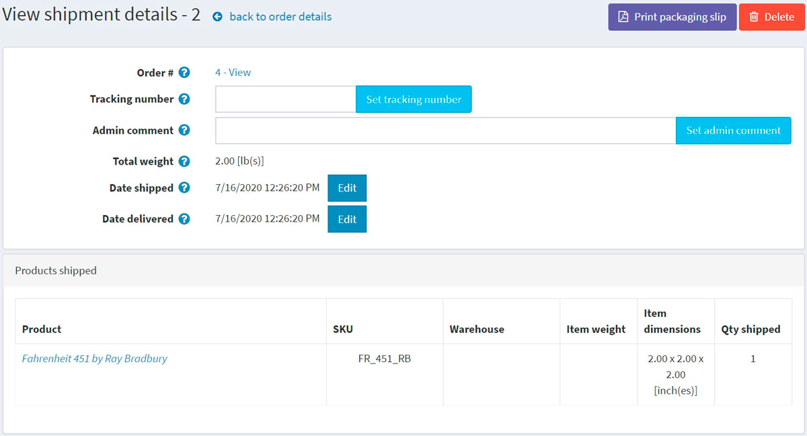
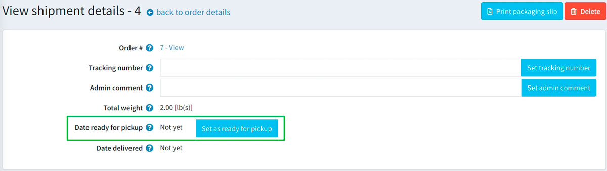

Shipping management
To search for shipments and view them, go to Sales → Shipments.
Shipment list

The top area of the page enables you to search for a shipment by various search criteria:
- Start date and End date for shipments created between these dates.
- Enter the Tracking number if you want to find shipment with a certain tracking number.
- Select the Warehouse for shipments sent from a specific warehouse.
- Click the Load not delivered checkbox if you do not want to load already delivered items.
- Use Country, State/province, County/region, City to search by a shipment destination.
- Click the Load not shipped checkbox if you do not want to load already shipped items.
Select certain shipments to Set as shipped (selected) or Set as delivered (selected). You can also Print packaging slips (selected) or Print Packaging slips (all) to print packaging receipts.
In the list of shipments, a store owner can view all items of a shipment by clicking  in the first column of the shipment.
Shipment details
If you click View, the View shipment details window will be opened as follows:

In this window, you can:
- Proceed to the order.
- Set a Tracking number for the shipment.
- Add an Admin comment for internal use.
- See the Shipment total weight.
- Mark the shipment as Shipped.
- Edit the Date shipped.
- Mark the shipment as Delivered.
- Edit the Date delivered.
- Print packaging slip.
- Delete the shipment.
If a customer chose the "Pick up in store" shipping method during the checkout process, you will be able to mark the shipment as "ready for pickup". On the View shipment details page, this button looks as follows:

Shipping settings
To set up shipping, visit the Configure shipping section.